中华五子棋协会2010年协会杯夏季五子棋大赛自战解说＆感言
#1 中华五子棋协会2010年协会杯夏季五子棋大赛自战解说＆感言 作者：足球赛 发表时间：2010-8-5 19:39:44
山口规组 第一轮 黑︰郑羽涵 初段 白︰﹙假先﹚杨裕雄 初段 开局︰金星三打
本文来源于中国五子棋网，
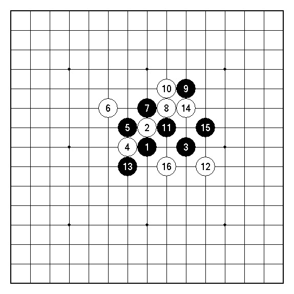
第一轮 实战 第1谱(1~16)
评论︰第一轮的对手是今年的新科初段，对她的实力可以说是完全一无所知。不管如何，毕竟同样是有段者，相信实力绝对是不容小觑。
实战的白6似乎很少有人尝试过，却是山口规则里为我最爱使用的下法。黑7应为最佳选点，16手止按照我相当熟悉的步调进行着。
实战的黑13为缓着，此棋应如下图︰
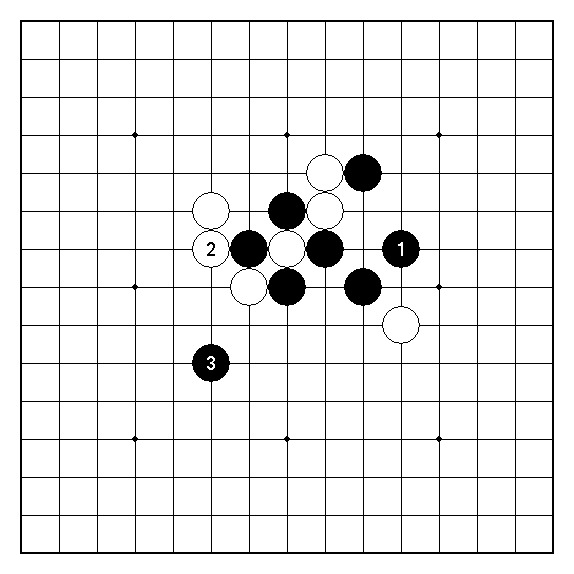
图1
图1︰黑1在右边构阵为比赛当天林挺伟三段告诉我的走法。接下来白棋若想在左边白2暴动的话则黑3跳活三解消即可，白棋无法乱来。
也就是说，实战白8、10的走法几乎已经可以得出白棋必败的结论！
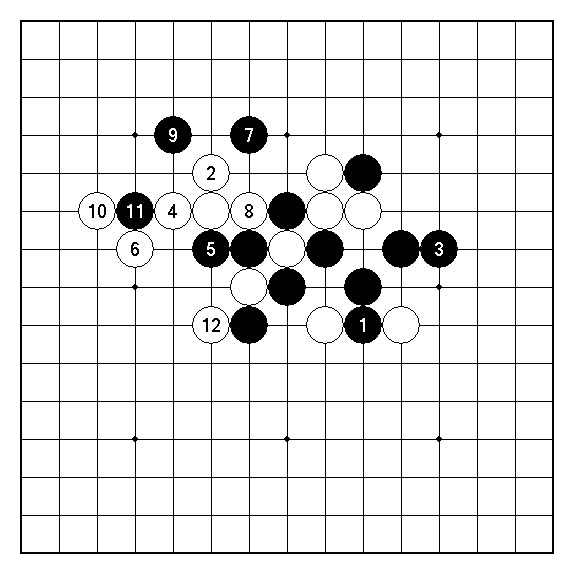
第一轮 实战 第2谱(17~28)
评论︰黑1挖入为本局的败着！由于黑在下边并无立即有效的攻击手段可以施展，白2得以在左上边整备后局势大致底定。此黑1︰
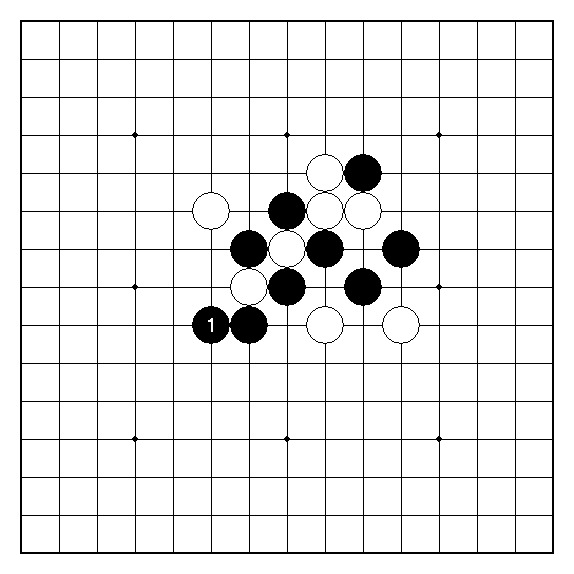
图2
图2︰黑1如于本图般先于左边补棋的话则尚能撑住大局，其后白方总要在下边应付一手，次一手的决定权仍保留在黑方的手里。
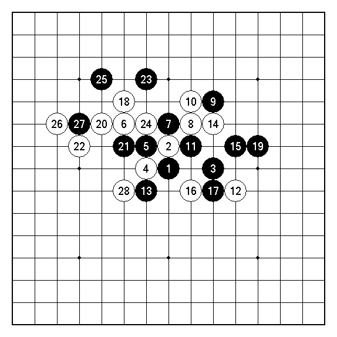
第一轮 实战 总谱(1~28)
山口规组 第二轮 黑︰﹙假先﹚林挺伟 三段 白︰杨裕雄 初段 开局︰雨月四打
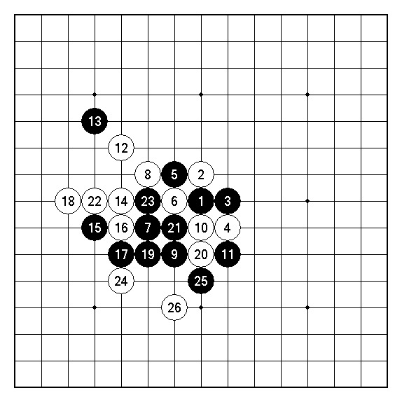
第二轮 实战 第1谱(1~26)
评论︰第二轮的对手为去年国手选拔赛冠军，并在同年世界杯击败前俄罗斯冠军Yuriy Tarannikov的林挺伟三段。
实战他开出了雨月四打我选择执白。白4一般来说着于G8点较为常见，但对弈时我猜想这应该是对手有所准备的选点，如果乖乖的走出G8不免有自投罗网之嫌，便将白4打在I7这点。
白12如果着于H5的变化请见下图︰
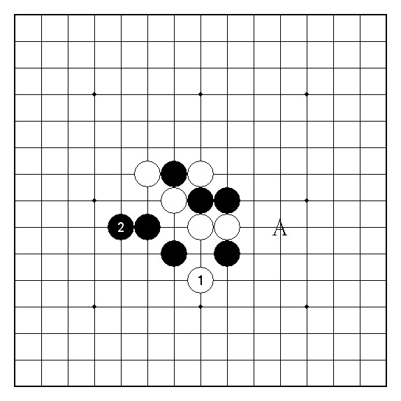
图3
图3︰此白1为较为保守的下法，但如此一来黑可于2或A位进行整备掌握攻击先机。因此，如此被动的走法在实战并未为我所采用。
实战14至18止双方都打出互不相让的激烈选点，白22跳冲四其实单防于E5即可，白26算是白方于本盘棋丢出来的第一个失误︰
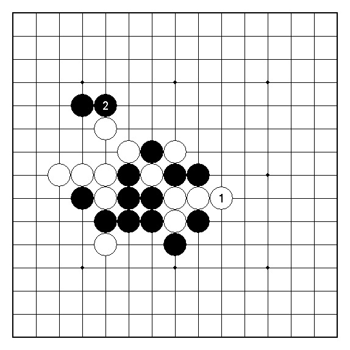
图4
图4︰此白1我认为才是当前局面下最善的应手，黑下方没有立即有效的攻击胜。接着转于左上方防守白阵应为行情所在，如此一来胜负仍是未定之数。
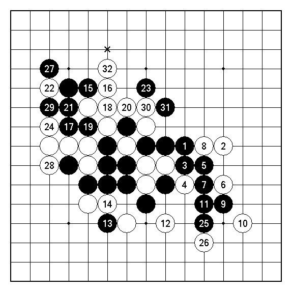
第二轮 实战 第2谱(27~58)
评论︰由于前谱白26的失误，黑接下来得以于右边继续对白展开攻势。白2防于K8似乎较好。白4为本局棋出现的第二个失误，可惜黑7的攻击错误救了白棋一命，此黑7应︰
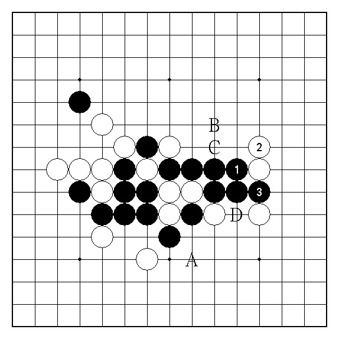
图5
图5︰实战第二谱的黑7应于本图黑1冲四后防守白2的跳活三，如此一来上下各留下了B→C和D→A两个攻击胜白棋无法同时兼顾！
其后，黑棋碍于时间用罄读秒的压力下，没有余裕堵住来自白上方的攻势。本局可以说是赢得相当侥幸！
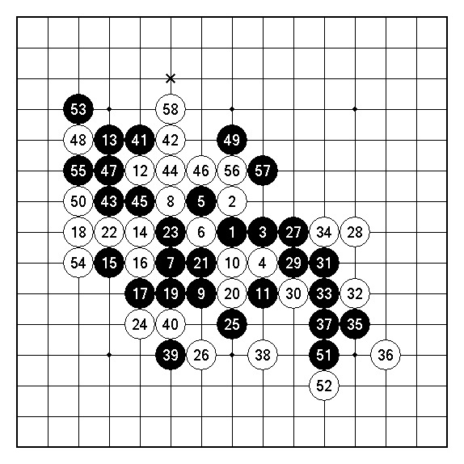
第二轮 实战总谱(1~58)
山口规组 第三轮 黑︰﹙假先﹚陈威翰 三段 白︰杨裕雄 初段 开局︰岚月四打
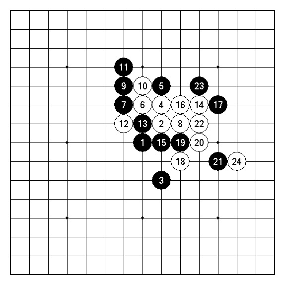
第三轮 实战 第1谱(1~24)
评论︰第三轮的对手陈威翰三段，对他的认识仅止于几年